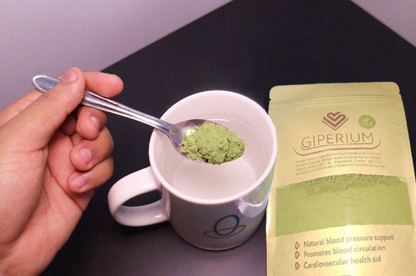

Age is not an obstacle to your life! The 109 y.o. specialist shared the secret of his longevity and excellent health
Mr. Khan says that the secret of the longevity relies in blood vessels. If they are clean and healthy, you can live up to 120 y.o. and even more, and feel completely healthy. The specialist completely confirmed this statement.
Our reporter managed to interview. mr. Khan, who explained his life-prolonging method of cleansing the blood vessels.
At the age of 109 y.o., mr. Khan was congratulated by the president. A photo from mr. Khans workplace.
- Mr. Khan, you often said that clean blood vessels are the basis for health. Why?
- It's simple. The functioning of the organs and systems in the body depends on the quality of the blood circulation. Blood circulation means delivering oxygen and nutrients to the internal organs, as well as collecting the carbon dioxide and metabolic products. In childhood, adolescence, youth, we move more, the vessels are new, elastic, clean - the nutrition of the organs is maximum. With age, we move less, and our vessels start to get dirty. This is because of many factors, not all detrimental (such as smoking, unhealthy eating, poor environment, sedentary lifestyle), but also natural (depositing of lipids, a process which takes places in all organisms).
What does 'dirty' blood vessels mean? Imagine some pipes full of rust. What's going on? The pressure of the water increases and the water tastes bad. The same thing happens with the blood vessels. When cholesterol or other substances are deposited on them, the pressure increases ( the dirty vessels are the main cause for hypertension!), the blood contains impurities, the blood circulation is deranged. As a result, changes take place in all the organs and systems of the body. Even the skin is a system.
The human body gets older. If you are careful and you cleanse your blood vessels, you have the chance of living at least 20 years without pain in the organs or joint pain, and the body will work excellently. In other words, cleansing the blood vessels can prolong your life and health. And it is not just a theory. I recommended this method to my patients and I practice it personally. All who have listened my advice have exceeded those who are of the same age.
 This is how the gradual dirt of the vessels takes place.
If you have never cleansed your blood vessels and you are
over 40 years old, they contain many impurities. This can
affect your health, or maybe this process has already
started.
This is how the gradual dirt of the vessels takes place.
If you have never cleansed your blood vessels and you are
over 40 years old, they contain many impurities. This can
affect your health, or maybe this process has already
started.
- What kind of pathologies can the 'dirty' blood vessels cause?
- As I already mentioned, the whole body suffers. But first of all, the organs and systems directly connected to the blood circulation are affected - the cardiovascular system.
The impurities from the blood vessels can cause the appearance of the following diseases:
- Atherosclerosis. The vessels stop functioning well: the small vessels are completely clogged, and the main ones contain high deposits of cholesterol.
- The ischemic heart disease. It is caused by regular blood deficiency in the coronary vessels, which, in turn, develop because of the impurities from the vessels.
- Stroke. The blood supply impairments in the cerebral tissue causes the death of the nervous endings, which leads to the loss of certain functions.
- Hypertension. The impurities from the blood vessels cause the narrowing of the lumen and the increase of the blood pressure.
- Varicose veins. They appear inside the body, not just on legs (which is alarming for women). The hemorrhoids are a consequence of the venous dilatation.
- Venous and arterial thrombosis. The deposits of impurities from the blood vessels form thrombi and produce the death of the vessel, which can lead to the death of a group of cells from an organism. If the thrombus unbinds and gets into the blood stream, the blocking of the blood vessels in the heart may take place, the cardiac arrest, which in 70% of the cases is followed by the death of the patient.
These photos show the danger that the deposits from the blood cells pose to the health, and how much they reduce your life.

53 y.o. man who has suffered a stroke. The stroke leads IN ALL CASES to invalidity, these patients require special care. The cause is the blocking of the blood vessels.
The varicose veins many women suffer from are also a direct consequence of the deposits in the vessels.
This situation is spreading. The cardiovascular diseases are responsible for 4 times more deaths than the other causes. The specialists are aware of this, they know the cleansing of the blood vessels in necessary, but for some reasons, the Pakistani medicine neglects this aspect. Most specialists prescribe remedies for decreasing the blood pressure in case of hypertension. However, these are not meant to cure, but they have a temporary effect. It is necessary to cleanse the blood vessels. By the way, this method is has been practiced in the US and Europe by all people over 35-40 y.o. for over half a century. All patients there know about the necessity of cleansing the blood vessels. I kept asking myself all the time why this doesn't happen in our country as well.
- Are there any symptoms which make us realize about the presence of deposits in the blood vessels?
- Of course there are. The main symptoms are:
- Migraines
- Memory impairments
- Chronic fatigue
- Insomnia
- Intimate issues
- Eyesight and hearing disorders
- High blood pressure
- Breathing impairments and angina pectoris
- Pale skin on the legs
- Muscle and joint pain
Regardless if you have one of these symptoms or not, after the age of 30, it is necessary to cleanse the blood vessels at least once in 5 years. This way, you will have a strong health.
The blood vessels have the capacity of gathering impurities, especially in older people. For this, it is not necessary to eat burgers or French fries all day long. Even after eating a sausage or a fried egg, a certain amount of cholesterol will deposit in the blood cells, which, in time, will increase.
- Please tell us about your secret for cleansing the blood vessels.
- Until recently, the process of cleansing the blood cells took me a few months. I collected medicinal herbs, I was looking for them at the market or I ordered them on the internet and I prepared an infusion from them. Now, I don't need to do this anymore, since my colleagues from the Institute for Cardiovascular Diseases have created a good and cheap remedy for cleansing the vessels - GIPERIUM Moringa Powder. In fact, this product regulates the blood pressure and treats hypertension, due to purifying the vessels. Therefore, it is excellent for our purpose.
I mention that this remedy does not contain chemicals, only concentrated extracts of medicinal herbs such as Arjuna Extract, Moringa Oleifera Extract, and Lycopene with properties that cleanse the blood cells. This is why it is so beneficial for the organism.
Most patients continue to ask for my advice in terms of purifying the blood vessels. Lately, I recommend them only this product. It is highly effective.
On the Institute for Cardiovascular Diseases website, the official statistics of the clinical studies have been presented. Approximately 2 thousand patients participated in these, and they all followed a treatment with GIPERIUM Moringa Powder.
The results of the studies:
- The normalization of the arterial blood pressure in 1-2 days since the administration of the medicine
- The normalization of the cardiac rhythm after finishing the treatment - 97% of the cases
- The complete cleansing of the blood vessels from cholesterol after the treatment - 99% of the patients
- The increase of the efficiency of the treatment for chronic diseases - 99% of the patients
- The improvement of the general health condition - 100% of the patients
- Absence of any adverse reactions during the treatment - 100% of the patients
- How much do GIPERIUM Moringa Powder cost and where can we buy it from?
- You know that the pension does not allow you to buy expensive medicines. I could not recommend such a remedy. GIPERIUM Moringa Powder is not expensive and, right now, there is an offer
It is the main medicine of the company for dealing with arterial hypertension. As a result, anyone can buy GIPERIUM Moringa Powder with 50% discount.
More details on how to get GIPERIUM Moringa Powder with delivery everywhere in the country
To order GIPERIUM Moringa Powder, you need to participate in the "Pakistan Without Hypertension!"
- Fill out the official application form on this website.
- The manager will contact you to confirm the delivery address
- In 4-7 days (the delivery term), you will receive GIPERIUM Moringa Powder at the post office.
In order to keep the purity of the blood vessels, I recommend repeating the treatment every 1-2 years. Especially to older people. It will help you strengthen your health and postpone the appearance of aging signs. The clean blood vessels are the guarantee of health.
- Mr. Khan, thank you for revealing these important details in the interview.
Off the record, mr. Khan, confessed that he likes to work in the garden and help his children, who are already at the retirement age. His wife is also long-lived, she is 99 y.o. They both do treatments for cleansing the blood vessels. The professor believes it is the only thing keeping them alive.
UPDATE: Important! Because of the high number of requests, we need to limit the duration of this campaign! The current stage will take place until 10.11.2020 inclusively! Until the end of the campaign, the original product GIPERIUM Moringa Powder can be ordered by anyone through the official application form with 50% DISCOUNT!
Comments
Rahmat Khan Sialkot
Thank you! The article is very interesting. I have already ordered GIPERIUM Moringa Powder.
Faisal Latif Islamabad
I have already bought and tested GIPERIUM Moringa Powder. I have been suffering from high blood pressure for 7 years. I can't remember that time in my life when I had normal blood pressure. At the recommendation of the specialist, I decided I had to cleanse my vessels. After a one month treatment with GIPERIUM Moringa Powder, my blood pressure had a normal value! It's been 2 months since I don't have high blood pressure anymore. It is a different life. I feel a thousand times better. I recommend this excellent remedy to everyone, and with this discount, it is almost a present.
Zahis Jee Sukkur
I also treated myself for a month with GIPERIUM Moringa Powder. I feel healthier and stronger. I feel younger.
Zekra Noor Rawalpindi
Thank you. I ordered it. I like that it will be delivered by post everywhere.
Muhammad Imran Sargodha
The parcel arrived yesterday. This is how the product looks like. I will do the treatment for cleansing together with my wife. Some recent test showed we have the vessels clogged with cholesterol.
Maryam Jani Faisalabad
A month ago, I started the treatment with GIPERIUM Moringa Powder. Sometimes, I had high blood pressure and irregular cardiac rhythm. I've been using it for 2 week. The blood pressure came back to normal. I feel completely healthy.
Mian Shahmeer Bahawalpur
I started treatments for cleansing the vessels 5 years ago. They help me maintain my health and give me strength. I have no disease, though many of my colleagues have already died. It is absolutely necessary to cleanse the blood vessels!
Aysha Mlik Lahore
I treated my high blood pressure with this powder. I have been suffering for many years from it. In time, I got diabetes and kidney problems as well. Memory and eyesight impairments. I did a lot of treatments with no effect. I decided to test GIPERIUM Moringa Powder. It was the first time I ordered products on the Internet. It proved to be very simple.
Hakim Usama Quetta
Thank you! I watched a tv show about this product. All specialists recommended it. They said that cleansing the vessels is absolutely necessary for everyone.
Basharat Khan Hyderabad
The supplement is highly effective! I confirm! I've been having a blood pressure of 140/90 for years. After the treatment, my pressure came back to 125/80. I’m feeling great!
Atlas Awan Multan
I read all the information about GIPERIUM Moringa Powder on this website. Surprising and impressive!
Ameen Ullah Peshawar
I too advantage of the offer! Thank you!
Adnan Dani Gujranwala
I also treated myself for a month (interruptedly). I feel better. I am full of strength and energy, I strengthened my immune system. I feel like I am 10 years younger.
Ayesha Rani Karachi
Two months ago, I also did a cleansing treatment with GIPERIUM Moringa Powder. When I had clogged vessels, I always felt very tired, now I am very energetic. I manage to do more things during the day. I had strong headaches, now they are gone. I sleep better. In any case, I ordered a few more packs. Thank you!